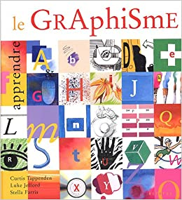
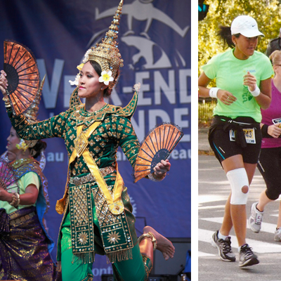

Bonjour, je me présente :
Je m'appelle Sambath Pheakdey, Bun.
Les gens me surnomme Sam.
Études
Mes études consistent en communication graphique. J'ai fait un DEC en graphisme obtenu en 2006. Je suis présentement un cours AEC en design et d'intégration web du Cégep de Trois-Rivières.

Retour au début
Sports

Retour au début
Loisirs
Mes loisirs préférés sont :
Retour au début
Rêves
Un jour, je rêve de partir en voyage et visiter les pays suivants :
Retour au début